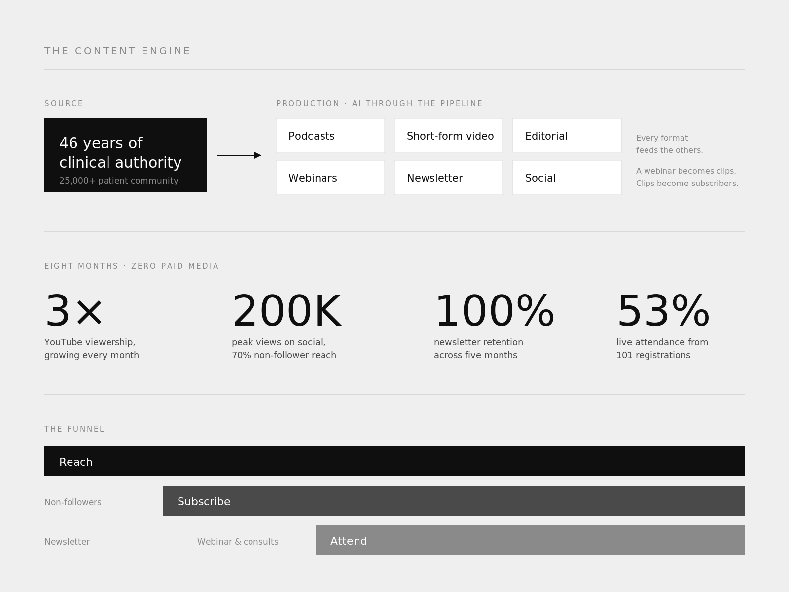

The growth engine
A 46-year medical practice with a 25,000-strong community and no digital voice. I built the complete engine: podcasts with high-profile guests, short-form video, editorial, webinars, and a paid newsletter, with AI through the whole pipeline so a two-person studio sustains the output of a content team. Zero paid media, and the growth is still compounding month over month.
- YouTube viewership up 3x in eight months, growing every month
- Instagram peaks of 200K views, 70% of reach from non-followers
- Monetized newsletter, 100% retention through five months
- Flagship webinar: 101 registrations, 53% live attendance

Designing an AI physician
The same physician's preventive method, taken beyond the consult room. Health AI has a trust problem: generative models improvise and medicine cannot. So the system's defining feature is restraint. Phase one is deterministic; every recommendation comes from doctor-approved protocols, reviewed in a clinician dashboard before it reaches a member, designed for WhatsApp delivery on a HIPAA-eligible AWS architecture.
I designed the product end to end, built the market sizing and investor narrative, recruited the AI engineering team, and ran the first market test: a launch webinar with 101 registrations, 53% live attendance, and 100+ early adopters converted.

A brand 20-year-olds run without me in the room
A 1,500-attendee AI conference at the University of Washington, marketed by student volunteers using AI. That was the point, not the constraint. I designed the identity to survive other people's hands: palette, type, motion language, and a versioned template library with platform playbooks, so a first-time volunteer produces on-brand work on day one.
Then I built the method that runs it. Not a brand book handed over and abandoned, but a working system: a 107-day, nine-platform strategy, platform-specific training, clear ownership per channel, and a review gate I hold on a 24-hour turnaround. Volunteers create and publish. I set direction and hold the bar. All channels are live and run by the trained team.
I also created and convene the AI Film Sprint: twelve hours, one theme, teams of students writing, generating, voicing, and editing a complete short film entirely with AI. No cameras, no actors, no stock. I designed the format end to end, from the judging rubric that weights story above tooling to the twelve-hour production timeline, and I lead the sponsorship outreach: pitching AI video, voice, and music platforms to put generation credits directly into students' hands, in exchange for placement and real proof of what their tools do under deadline.
The through-line across all of it is the same conviction: young people do not need to be protected from AI, they need to be made confident with it, especially on the creative side, where the fear of being replaced is loudest and least true. A student with no budget and no film school can now finish a cinematic short in an afternoon. The Sprint proves it live, on a deadline, in public.

AI films that filled a stage
A multicultural pageant needed contestants and sponsors. I produced fifteen AI films as the campaign engine: reveal pieces, story films, and short-form built entirely with generative tools, published across @femina_usa and @priyankasignaturecouture, where several became the accounts' best-performing posts.
- 15 AI films produced as the campaign's recruitment and sponsorship engine
- 35 contestants signed up
- 32+ sponsors secured
Alongside the films I direct thirty-five cinematic stage backdrops, one per contestant. No literal cultural symbols; each woman's story becomes a living environment. Wheat and woven thread for Moldova. A breathing celestial field for Cosmic Shakti. Water and mist for Seattle. Every composition is built for a real stage: controlled brightness, a deliberately calm center where she stands, motion pushed to the outer edges so her costume stays dominant.
ChatGPT for narrative analysis, Midjourney for master frames, Veo, Hailuo, and Leonardo for motion. AI generates; I direct, review, and approve every frame.
Watch the films ↗